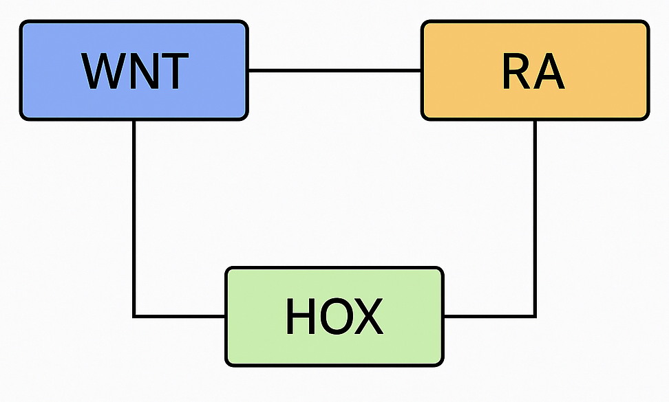

Cancer remains one of the most challenging problems in medical and biological research. My work is inherently interdisciplinary and focuses on understanding the molecular mechanisms that drive colorectal cancer progression and treatment response. I use mathematical modeling, analysis, and scientific machine learning to study the cross-regulation of the HOX, WNT, and retinoic acid (RA) signaling pathways and to identify vulnerable mechanisms underlying cancer stemness and disease progression. This research builds on my doctoral work completed under the supervision of Dr. Gilberto Schleiniger at the University of Delaware and is complemented by experimental collaborations at ChristianaCare’s Helen F. Graham Cancer Center & Research Institute under the guidance of my biological co-advisor, Bruce M. Boman (M.D., Ph.D., MSPH, FACP).
Hox genes are critical transcription factors that play a central role in both embryonic development and tumorigenesis. In humans, 39 Hox genes are grouped into four clusters—HOXA, HOXB, HOXC, and HOXD—located on chromosomes 7, 17, 12, and 2, respectively.

Recent work by collaborators at the Helen F. Graham Cancer Center & Research Institute at ChristianaCare has identified HOXA5 and HOXA13 as key regulators of the WNT and retinoic acid (RA) signaling pathways. Depending on the underlying biological context, these genes can either promote or suppress colorectal tumor formation. My research builds on these findings by developing mechanistic mathematical models that capture the interactions between HOXA5, HOXA13, and the WNT and RA pathways. Through this modeling framework, I aim to identify vulnerable regulatory mechanisms and potential therapeutic targets that can inform effective intervention strategies.